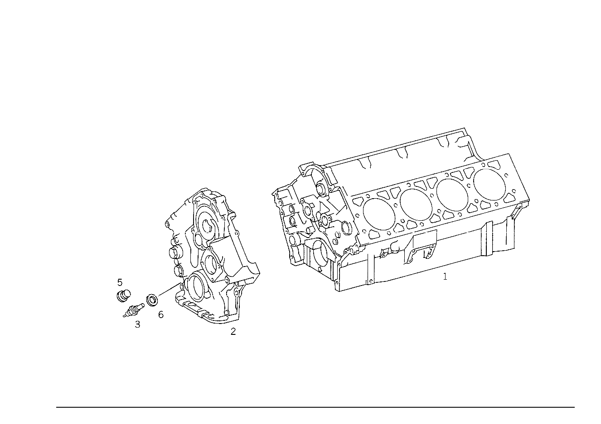

| № | Артикул | Название | Кол. | Примечание | Ограничение |
|---|---|---|---|---|---|
| 1 | A 116 010 12 06 | БЛОК ЦИЛИНДРОВ | 1 | С ПОДОГНАН. ПОРШНЯМИ Z 12.406/03, Z 12.406/04, Z 12.406/05, Z 12.406/07, Z 12.406/08 | |
| 3 | A 005 545 58 24 | Переключатель | 1 | ТЕМПЕРАТУРА МАСЛА Z 12.406/03, Z 12.406/04, Z 12.406/07, Z 12.406/08 | |
| 6 | A 094 990 88 07 | Уплотнительное кольцо | 1 | ТЕМПЕРАТУРА МАСЛА Z 12.406/03, Z 12.406/04, Z 12.406/07, Z 12.406/08 | |
| 26 | A 116 032 15 04 | ШКИВ | 1 | КОЛЕНВАЛ Z 12.406/03, Z 12.406/04, Z 12.406/07, Z 12.406/08 [402] БОЛЬШЕ НЕ ПОСТАВЛЯЕТСЯ | |
| 29 | A 116 030 07 03 | ДЕМПФЕР | 1 | Z 12.406/03, Z 12.406/04 | |
| 70 | A 001 140 33 53 | КОРПУС ЗАСЛОНКИ | - | Z 12.406/03, Z 12.406/04, Z 12.406/07, Z 12.406/08 [051] ИСПОЛЬЗОВАТЬ СТАРЫЙ НОМЕР ДЕТАЛИ ДО ДВИГАТЕЛЯ 116.962 022653, SWEDEN,SWITZERLAND 116.963 041128, SWEDEN,SWITZERLAND 116.962 022969, AUSTRALIA 116.963 041786, AUSTRALIA 117.963 038181 SWEDEN,SWITZERLAND | |
| 70 | A 001 140 63 53 | КОРПУС ЗАСЛОНКИ | 1 | Z 12.406/03, Z 12.406/04, Z 12.406/07, Z 12.406/08 [402] БОЛЬШЕ НЕ ПОСТАВЛЯЕТСЯ | |
| 78 | A 117 141 16 80 | ПРОКЛАДКА УПЛОТНИТЕЛЬНАЯ | - | Z 12.406/03, Z 12.406/04 | |
| 78 | A 102 141 32 80 | уплотнение | 1 | ШТУЦЕР ЗАСЛОНКИ НА НИЖН.ЧАСТИ ВПУСК.КОЛЛЕКТ. Z 12.406/03, Z 12.406/04 | |
| 82 | N 000137 006204 | Пружинная шайба | 4 | ШТУЦЕР ЗАСЛОНКИ НА НИЖН.ЧАСТИ ВПУСК.КОЛЛЕКТ. Z 12.406/03, Z 12.406/04 | |
| 86 | N 000912 006040 | Цилиндрич. винт | 4 | ШТУЦЕР ЗАСЛОНКИ НА НИЖН.ЧАСТИ ВПУСК.КОЛЛЕКТ. Z 12.406/03, Z 12.406/04 | |
| 94 | A 117 997 09 82 | Шланг | 0 | 8X3.5 MM Z 12.406/03, Z 12.406/04, Z 12.406/05, Z 12.406/07, Z 12.406/08, Z 12.406/10 [404] ЗАКАЗЫВАТЬ ПОГОННЫМИ МЕТРАМИ | |
| 94 | A 117 997 09 82 | Шланг | 2 | FROM THROTTLE HOUSING TO CHANGE\-OVER VALVE; YELLOW 40 MM; 8X3.5 MM Z 12.406/04 [404] ЗАКАЗЫВАТЬ ПОГОННЫМИ МЕТРАМИ | |
| 94 | A 117 997 09 82 | Шланг | 1 | ПЕРЕКЛЮЧАЮЩИЙ ЭЛЕКТРОКЛАПАН 40 MM; 8X3.5 MM Z 12.406/04, Z 12.406/08 [404] ЗАКАЗЫВАТЬ ПОГОННЫМИ МЕТРАМИ | |
| 98 | A 000 158 90 35 | Вакуумный трубопровод | 1 | FROM THROTTLE HOUSING TO CHANGE\-OVER VALVE; YELLOW 960 MM Z 12.406/04 [404] ЗАКАЗЫВАТЬ ПОГОННЫМИ МЕТРАМИ | |
| 100 | A 000 158 98 35 | Вакуумный трубопровод | 0 | Z 12.406/03, Z 12.406/04, Z 12.406/05, Z 12.406/07, Z 12.406/08, Z 12.406/10 [404] ЗАКАЗЫВАТЬ ПОГОННЫМИ МЕТРАМИ | |
| 100 | A 000 158 98 35 | Вакуумный трубопровод | 1 | FROM ELECTRIC CHANGE\-OVER VALVE TO RETARD IGNITION DISTRIBUTOR; YELLOW 970 MM Рулевое управление: Вправо Z 12.406/04, Z 12.406/08 | |
| 102 | A 117 078 02 81 | Шланг | - | Z 12.406/03, Z 12.406/04, Z 12.406/07, Z 12.406/08 [415] ПРИМЕЧ. ПО ЗАМЕНЕ ПРИМЕНИМО ТОЛЬКО ДЛЯ СТОЯЩИХ РЯДОМ ПОЗИЦИЙ | |
| 102 | A 617 078 09 81 | Шланг | 1 | МЕМБРАННЫЙ МЕХАНИЗМ УМЕНЬШЕНИЯ УОЗ ПРЕРЫВАТЕЛЯ\-РАСПРЕДЕЛИТЕЛЯ ЗАЖИГАНИЯ Z 12.406/03, Z 12.406/04, Z 12.406/07, Z 12.406/08 | |
| 106 | A 117 078 05 81 | Шланг | 0 | Z 12.406/03, Z 12.406/04, Z 12.406/05, Z 12.406/07, Z 12.406/08, Z 12.406/10 | |
| 106 | A 117 078 05 81 | Шланг | 2 | FROM THROTTLE HOUSING TO THERMO\-VALVE OPENING AT 40 DEGREES Z 12.406/03, Z 12.406/04, Z 12.406/07, Z 12.406/08 | |
| 106 | A 117 078 05 81 | Шланг | 1 | КАМЕРА ОПЕРЕЖ. РАСПРЕДЕЛ.ЗАЖИГ. Z 12.406/03, Z 12.406/04, Z 12.406/07, Z 12.406/08 | |
| 110 | A 000 158 88 35 | ТРУБОПРОВОД | 1 | FROM THROTTLE HOUSING TO THERMO\-VALVE OPENING AT 40 DEGREES 310 MM Z 12.406/03, Z 12.406/04, Z 12.406/07, Z 12.406/08 [404] ЗАКАЗЫВАТЬ ПОГОННЫМИ МЕТРАМИ | |
| 122 | A 107 470 08 93 | Клапан | 1 | РЕГЕНЕРАЦИЯ Z 12.406/04, Z 12.406/05, Z 12.406/08 | |
| 122 | A 001 140 79 60 | КЛАПАН | 1 | РЕГЕНЕРАЦИЯ Z 12.406/04, Z 12.406/05, Z 12.406/08 | |
| 124 | A 117 078 01 45 | Штуцер ответвления | 1 | КЛАПАН РЕГЕНЕРАЦИИ Рулевое управление: Вправо Z 12.406/03, Z 12.406/04, Z 12.406/07, Z 12.406/08 | |
| 126 | A 117 078 05 81 | Шланг | 0 | Z 12.406/03, Z 12.406/04, Z 12.406/05, Z 12.406/07, Z 12.406/08, Z 12.406/10 | |
| 126 | A 117 078 05 81 | Шланг | 1 | FROM THERMOVALVE TO REGENERATION VALVE, BROWN Z 12.406/04 | |
| 128 | A 000 158 96 35 | ТРУБОПРОВОД | 0 | Z 12.406/03, Z 12.406/04, Z 12.406/05, Z 12.406/07, Z 12.406/08, Z 12.406/10 [404] ЗАКАЗЫВАТЬ ПОГОННЫМИ МЕТРАМИ | |
| 128 | A 000 158 96 35 | ТРУБОПРОВОД | 1 | FROM THERMOVALVE TO REGENERATION VALVE, BROWN 700 MM Z 12.406/04 | |
| 128 | A 000 158 96 35 | ТРУБОПРОВОД | 1 | КЛАПАН РЕГЕНЕРАЦИИ К КЛАПАНУ РЕЦИРКУЛ. ОГ, КОРИЧН. 130 MM Z 12.406/04 | |
| 130 | A 117 997 05 82 | Шланг | 0 | Z 12.406/03, Z 12.406/04, Z 12.406/05, Z 12.406/07, Z 12.406/08, Z 12.406/10 [404] ЗАКАЗЫВАТЬ ПОГОННЫМИ МЕТРАМИ | |
| 130 | A 117 997 05 82 | Шланг | 1 | КЛАПАН РЕГЕНЕРАЦИИ К КЛАПАНУ РЕЦИРКУЛ. ОГ, КОРИЧН. 60mm Рулевое управление: Вправо Z 12.406/03, Z 12.406/04, Z 12.406/07, Z 12.406/08 [404] ЗАКАЗЫВАТЬ ПОГОННЫМИ МЕТРАМИ | |
| 154 | A 116 140 02 18 | КОРПУС | - | Z 12.406/03, Z 12.406/04, Z 12.406/07, Z 12.406/08 [069] ИСПОЛЬЗОВАТЬ СТАРЫЙ НОМЕР ДЕТАЛИ ДО ДВИГАТЕЛЯ 116.962 040148 116.963 069812 | |
| 154 | A 116 140 09 18 | КОРПУС | - | Z 12.406/03, Z 12.406/04, Z 12.406/07, Z 12.406/08 | |
| 154 | A 116 140 07 18 | КОРПУС | 1 | КОРПУС ВОЗДУХОПРОВОДА Z 12.406/03, Z 12.406/04, Z 12.406/07, Z 12.406/08 | |
| 160 | A 116 990 01 78 | Штуцер | 1 | Z 12.406/03, Z 12.406/04, Z 12.406/07, Z 12.406/08 | |
| 182 | A 000 070 19 62 | РЕГУЛЯТОР | - | Z 12.406/03, Z 12.406/04, Z 12.406/07, Z 12.406/08 | |
| 182 | A 116 070 02 62 | РЕГУЛЯТОР | 1 | РЕГУЛЯТ.ГОРЯЧ.ПОТОКА Z 12.406/03, Z 12.406/04, Z 12.406/07, Z 12.406/08 | |
| 186 | A 000 158 14 35 | Трубопровод | 1 | FROM IDLING AIR LINE TO WARM\-UP REGULATOR 150mm; 4X1mm Z 12.406/03, Z 12.406/04, Z 12.406/07, Z 12.406/08 [404] ЗАКАЗЫВАТЬ ПОГОННЫМИ МЕТРАМИ | |
| 188 | A 001 997 38 52 | ШЛАНГ | - | Z 12.406/03, Z 12.406/04, Z 12.406/05, Z 12.406/07, Z 12.406/08, Z 12.406/10 [404] ЗАКАЗЫВАТЬ ПОГОННЫМИ МЕТРАМИ | |
| 188 | A 008 997 60 82 | Шланг | - | 6X1MM Z 12.406/03, Z 12.406/04, Z 12.406/05, Z 12.406/07, Z 12.406/08, Z 12.406/10 [404] ЗАКАЗЫВАТЬ ПОГОННЫМИ МЕТРАМИ | |
| 188 | A 000 290 09 00 | Трубопровод | 0 | 6x1mm Z 12.406/03, Z 12.406/04, Z 12.406/05, Z 12.406/07, Z 12.406/08, Z 12.406/10 [404] ЗАКАЗЫВАТЬ ПОГОННЫМИ МЕТРАМИ | |
| 194 | A 117 078 06 81 | Шланг | 1 | FROM IDLING AIR LINE TO WARM\-UP REGULATOR Z 12.406/03, Z 12.406/04, Z 12.406/07, Z 12.406/08 | |
| 280 | A 116 993 17 10 | ПРУЖИНА | 1 | РЕГУЛИРОВАНИЕ Z 12.406/03, Z 12.406/04 | |
| 318 | A 000 158 14 35 | Трубопровод | 0 | 4X1mm Z 12.406/03, Z 12.406/04, Z 12.406/05, Z 12.406/07, Z 12.406/08, Z 12.406/10 [404] ЗАКАЗЫВАТЬ ПОГОННЫМИ МЕТРАМИ | |
| 379 | A 000 094 08 65 | КЛАПАН | 1 | (КЛАПАН РЕЦИРКУЛЯЦИИ ВОЗДУХА В РЕЖИМЕ ПХХ) Z 12.406/03, Z 12.406/04, Z 12.406/07, Z 12.406/08 | |
| 383 | A 000 158 91 35 | Вакуумный трубопровод | 1 | FROM CIRCULATING\-AIR BOOSTER VALVE TO INTAKE MANIFOLD UPPER PART 320 MM Z 12.406/03, Z 12.406/04, Z 12.406/07, Z 12.406/08 [404] ЗАКАЗЫВАТЬ ПОГОННЫМИ МЕТРАМИ | |
| 387 | A 117 078 05 81 | Шланг | 1 | FROM CIRCULATING\-AIR BOOSTER VALVE TO INTAKE MANIFOLD UPPER PART Z 12.406/03, Z 12.406/04, Z 12.406/07, Z 12.406/08 | |
| 391 | A 110 997 16 72 | ШТУЦЕР | 1 | CONNECTION TO INTAKE MANIFOLD LOWER PART Z 12.406/03, Z 12.406/04, Z 12.406/07, Z 12.406/08 | |
| 395 | N 007603 012110 | Уплотнительное кольцо | 1 | CONNECTION TO INTAKE MANIFOLD LOWER PART Z 12.406/03, Z 12.406/04, Z 12.406/07, Z 12.406/08 | |
| 399 | A 116 476 02 26 | ШЛАНГ | - | Z 12.406/03, Z 12.406/04 | |
| 399 | A 114 997 18 82 | ШЛАНГ | 1 | ВОЗДУХОНАПРАВЛ.КОРПУС К КЛАПАНУ ПРИНУДИТ.РЕЦИРКУЛ. 95 MM; 13.3X3 MM Z 12.406/03, Z 12.406/04, Z 12.406/07, Z 12.406/08 [404] ЗАКАЗЫВАТЬ ПОГОННЫМИ МЕТРАМИ | |
| 402 | A 116 476 37 26 | ШЛАНГ | - | Z 12.406/03, Z 12.406/04 | |
| 402 | A 114 997 18 82 | ШЛАНГ | 1 | FROM INTAKE MANIFOLD LOWER PART TO CIRCULATING\-AIR BOOSTER VALVE 185 MM; 13.3X3 MM Z 12.406/03, Z 12.406/04, Z 12.406/07, Z 12.406/08 [404] ЗАКАЗЫВАТЬ ПОГОННЫМИ МЕТРАМИ | |
| 408 | N 910006 004028 | Заклепка | 1 | РАСПРЕДЕЛ.ВОЗДУХА ХОЛ.ХОДА Z 12.406/03, Z 12.406/04 | |
| 411 | N 000933 005058 | Винт | 1 | CIRCULATING AIR BOOSTER VALVE TO SLOTTED LINK LEVER Z 12.406/03, Z 12.406/04, Z 12.406/07, Z 12.406/08 | |
| 417 | A 012 094 00 02 | ВОЗДУШНЫЙ ФИЛЬТР | 1 | Z 12.406/04, Z 12.406/08 [402] БОЛЬШЕ НЕ ПОСТАВЛЯЕТСЯ | |
| 418 | A 001 094 78 04 | - Фил. элемент возд.фильтра | 1 | Z 12.406/03, Z 12.406/04, Z 12.406/05, Z 12.406/07, Z 12.406/08, Z 12.406/10 | |
| 419 | A 001 997 08 41 | - УПЛОТНИТ. КОЛЬЦО | 1 | TO 011 094 99 02,012 094 00 02 Z 12.406/03, Z 12.406/04, Z 12.406/05, Z 12.406/07, Z 12.406/08, Z 12.406/10 [402] БОЛЬШЕ НЕ ПОСТАВЛЯЕТСЯ | |
| 420 | A 001 094 22 80 | - ПРОКЛАДКА УПЛОТНИТЕЛЬНАЯ | 1 | Z 12.406/03, Z 12.406/04, Z 12.406/05, Z 12.406/07, Z 12.406/08, Z 12.406/10 | |
| 421 | A 000 094 12 60 | - УПЛОТНИТ. КОЛЬЦО | - | Z 12.406/03, Z 12.406/04, Z 12.406/05, Z 12.406/07, Z 12.406/08, Z 12.406/10 | |
| 421 | A 001 094 95 80 | - уплотнение | 1 | Z 12.406/03, Z 12.406/04, Z 12.406/05, Z 12.406/07, Z 12.406/08, Z 12.406/10 [402] БОЛЬШЕ НЕ ПОСТАВЛЯЕТСЯ | |
| 422 | A 000 094 19 55 | - Крышка | 6 | Z 12.406/03, Z 12.406/04, Z 12.406/05, Z 12.406/07, Z 12.406/08, Z 12.406/10 | |
| 423 | A 000 990 17 62 | - ГАЙКА | - | Z 12.406/03, Z 12.406/04, Z 12.406/05, Z 12.406/07, Z 12.406/08, Z 12.406/10 | |
| 423 | A 000 990 09 62 | - гайка | 1 | Z 12.406/03, Z 12.406/04, Z 12.406/05, Z 12.406/07, Z 12.406/08, Z 12.406/10 | |
| 424 | A 002 094 46 04 | - ЭЛЕМЕНТ ФИЛЬТРУЮЩИЙ | 1 | Z 12.406/03, Z 12.406/04, Z 12.406/05, Z 12.406/07, Z 12.406/08, Z 12.406/10 | |
| 425 | A 001 990 09 36 | - БОЛТ | 2 | TO 011 094 99 02,012 094 00 02 Z 12.406/03, Z 12.406/04, Z 12.406/05, Z 12.406/07, Z 12.406/08, Z 12.406/10 | |
| 426 | A 123 584 93 21 | - Информационная табличка | - | Z 12.406/03, Z 12.406/04, Z 12.406/05, Z 12.406/07, Z 12.406/08, Z 12.406/10 | |
| 426 | A 210 584 00 47 | - Предупреждающая табличка | 1 | "ОПАСНО ДЛЯ ЖИЗНИ! ВЫСОКОЕ НАПРЯЖЕНИЕ"; ПО\-НЕМЕЦКИ, АНГЛИЙСКИ И ФРАНЦУЗСКИ Z 12.406/03, Z 12.406/04, Z 12.406/05, Z 12.406/07, Z 12.406/08, Z 12.406/10 | |
| 430 | A 006 997 61 92 | РЕМЕНЬ КЛИНОВОЙ | 1 | КОМПЛЕКТ = 2 ШТУК 9.5X1130 Z 12.406/03, Z 12.406/04 | |
| 433 | A 006 997 63 92 | РЕМЕНЬ КЛИНОВОЙ | 1 | КОМПРЕСС. КОНДИЦИОНЕРА 12.5X920 Z 12.406/03, Z 12.406/04 | |
| 439 | A 116 140 77 01 | ВПУСКНОЙ КОЛЛЕКТОР | - | Z 12.406/03, Z 12.406/04 | |
| 439 | A 116 140 79 01 | ВПУСКНОЙ КОЛЛЕКТОР | - | Z 12.406/03, Z 12.406/04 [415] ПРИМЕЧ. ПО ЗАМЕНЕ ПРИМЕНИМО ТОЛЬКО ДЛЯ СТОЯЩИХ РЯДОМ ПОЗИЦИЙ | |
| 439 | A 116 140 58 01 | ВПУСКНОЙ КОЛЛЕКТОР | 1 | НИЖНЯЯ ДЕТАЛЬ Z 12.406/03, Z 12.406/04 | |
| 440 | N 000443 032003 | - Запорная крышка | 1 | TO 116 140 78 01,116 140 79 01 Z 12.406/03, Z 12.406/04 | |
| 446 | A 116 140 74 01 | ВПУСКНОЙ КОЛЛЕКТОР | - | Z 12.406/03, Z 12.406/04 | |
| 446 | A 116 140 70 01 | ВПУСКНОЙ КОЛЛЕКТОР | - | Z 12.406/03, Z 12.406/04 [015] ИСПОЛЬЗОВАТЬ СТАРЫЙ НОМЕР ДЕТАЛИ ДО ДВИГАТЕЛЯ 116.960 005335 116.961 010219 [415] ПРИМЕЧ. ПО ЗАМЕНЕ ПРИМЕНИМО ТОЛЬКО ДЛЯ СТОЯЩИХ РЯДОМ ПОЗИЦИЙ | |
| 446 | A 116 140 89 01 | ВПУСКНОЙ КОЛЛЕКТОР | - | Z 12.406/03, Z 12.406/04, Z 12.406/07, Z 12.406/08 [018] ИСПОЛЬЗОВАТЬ СТАРЫЙ НОМЕР ДЕТАЛИ ДО ДВИГАТЕЛЯ 116.962 001309 116.963 002396 [415] ПРИМЕЧ. ПО ЗАМЕНЕ ПРИМЕНИМО ТОЛЬКО ДЛЯ СТОЯЩИХ РЯДОМ ПОЗИЦИЙ | |
| 446 | A 116 140 82 01 | ВПУСКНОЙ КОЛЛЕКТОР | 1 | ВЕРХ.ЧАСТЬ Z 12.406/03, Z 12.406/04, Z 12.406/07, Z 12.406/08 | |
| 450 | N 000443 014001 | - Запорная крышка | 3 | Z 12.406/03, Z 12.406/04, Z 12.406/07, Z 12.406/08 | |
| 450 | N 000443 018003 | - Запорная крышка | 2 | TO 116 140 89 01 Z 12.406/03, Z 12.406/04, Z 12.406/07, Z 12.406/08 | |
| 450 | N 000000 004055 | - Запорная крышка | 2 | TO 116 140 89 01 Z 12.406/03, Z 12.406/04, Z 12.406/07, Z 12.406/08 | |
| 457 | A 116 141 03 08 | ШТУЦЕР | 2 | Z 12.406/03, Z 12.406/04 [402] БОЛЬШЕ НЕ ПОСТАВЛЯЕТСЯ | |
| 459 | A 110 987 02 45 | КОЛПАЧОК | - | Z 12.406/03, Z 12.406/04, Z 12.406/07, Z 12.406/08 [414] СТАРУЮ ДЕТАЛЬ УСТАНАВЛИВАТЬ БОЛЬШЕ НЕ РАЗРЕШАЕТСЯ | |
| 459 | A 000 987 37 45 | Колпачок | 2 | ШТУЦЕР ШЛАНГА,ВЕРХН.ЧАСТЬ.ВПУСК.КОЛЛЕКТ. Z 12.406/03, Z 12.406/04 | |
| 461 | A 001 997 38 52 | ШЛАНГ | - | Z 12.406/03, Z 12.406/04, Z 12.406/05, Z 12.406/07, Z 12.406/08, Z 12.406/10 [404] ЗАКАЗЫВАТЬ ПОГОННЫМИ МЕТРАМИ | |
| 461 | A 008 997 60 82 | Шланг | - | 6X1MM Z 12.406/03, Z 12.406/04, Z 12.406/05, Z 12.406/07, Z 12.406/08, Z 12.406/10 [404] ЗАКАЗЫВАТЬ ПОГОННЫМИ МЕТРАМИ | |
| 461 | A 000 290 09 00 | Трубопровод | 0 | 6x1mm Z 12.406/03, Z 12.406/04, Z 12.406/05, Z 12.406/07, Z 12.406/08, Z 12.406/10 [404] ЗАКАЗЫВАТЬ ПОГОННЫМИ МЕТРАМИ | |
| 469 | A 000 140 33 60 | КЛАПАН | 1 | ВЕРХН.ЧАСТЬ ВПУСКН.КОЛЛЕКТОРА Z 12.406/03, Z 12.406/04, Z 12.406/07, Z 12.406/08, Z 12.406/10 | |
| 473 | N 007603 010113 | Уплотнительное кольцо | - | Z 12.406/03, Z 12.406/04, Z 12.406/07, Z 12.406/08, Z 12.406/10 | |
| 473 | N 007603 010112 | Уплотнительное кольцо | 1 | ВЕРХН.ЧАСТЬ ВПУСКН.КОЛЛЕКТОРА; 10 X15\-CU Z 12.406/03, Z 12.406/04, Z 12.406/07, Z 12.406/08, Z 12.406/10 | |
| 476 | N 007604 014106 | Резьбовая пробка | - | Z 12.406/03, Z 12.406/04 | |
| 476 | A 094 990 16 08 | Резьбовая пробка | 1 | ВПУСКН. КОЛЛЕКТОР СЛЕВА Z 12.406/03, Z 12.406/04 | |
| 479 | N 007603 014100 | Уплотнительное кольцо | 1 | ВПУСКН. КОЛЛЕКТОР СЛЕВА; 14X18\-AL Z 12.406/03, Z 12.406/04 | |
| 482 | N 000912 008121 | Винт | - | Z 12.406/03, Z 12.406/04 | |
| 482 | N 007984 008047 | Винт | 2 | ВПУСКНОЙ КОЛЛЕКТОР К ГБЦ Z 12.406/03, Z 12.406/04 | |
| 486 | A 117 141 20 80 | ПРОКЛАДКА УПЛОТНИТЕЛЬНАЯ | - | Z 12.406/03, Z 12.406/04 | |
| 486 | A 117 141 22 80 | ПРОКЛАДКА УПЛОТНИТЕЛЬНАЯ | 1 | СЛЕВА Z 12.406/03, Z 12.406/04 | |
| 486 | A 117 141 24 80 | Уплотнение | 1 | СПРАВА Z 12.406/03, Z 12.406/04 | |
| 486 | A 117 141 21 80 | ПРОКЛАДКА УПЛОТНИТЕЛЬНАЯ | - | Z 12.406/03, Z 12.406/04 | |
| 486 | A 117 141 23 80 | ПРОКЛАДКА УПЛОТНИТЕЛЬНАЯ | 1 | СПРАВА Z 12.406/03, Z 12.406/04 | |
| 486 | A 117 141 25 80 | Уплотнение | 1 | СПРАВА Z 12.406/03, Z 12.406/04 | |
| 492 | A 117 078 01 45 | Штуцер ответвления | 1 | ВЕРХН.ЧАСТЬ ВПУСКН.КОЛЛЕКТОРА Z 12.406/03, Z 12.406/04, Z 12.406/07, Z 12.406/08 | |
| 495 | A 116 800 03 78 | Обратный клапан | - | Z 12.406/03, Z 12.406/04, Z 12.406/05, Z 12.406/08 | |
| 495 | A 001 140 66 60 | Клапан | 1 | ОБРАТН. УДАР Z 12.406/03, Z 12.406/04, Z 12.406/05, Z 12.406/08 | |
| 495 | A 001 140 17 60 | КЛАПАН | 1 | ОБРАТН. УДАР Z 12.406/03, Z 12.406/04, Z 12.406/05, Z 12.406/08 | |
| 498 | A 117 997 09 82 | Шланг | 1 | ОБРАТН. КЛАПАН К ЭЛ. ПЕРЕКЛ. КЛАПАНУ,СИНИЙ 40 MM; 8X3.5 MM Z 12.406/03, Z 12.406/04, Z 12.406/05, Z 12.406/07, Z 12.406/08, Z 12.406/10 [404] ЗАКАЗЫВАТЬ ПОГОННЫМИ МЕТРАМИ | |
| 501 | A 000 158 91 35 | Вакуумный трубопровод | 1 | ОБРАТН. КЛАПАН К ЭЛ. ПЕРЕКЛ. КЛАПАНУ,СИНИЙ 720 MM Z 12.406/04, Z 12.406/08 [404] ЗАКАЗЫВАТЬ ПОГОННЫМИ МЕТРАМИ | |
| 504 | A 117 078 02 81 | Шланг | - | Z 12.406/03, Z 12.406/04, Z 12.406/05, Z 12.406/07, Z 12.406/08, Z 12.406/10 [415] ПРИМЕЧ. ПО ЗАМЕНЕ ПРИМЕНИМО ТОЛЬКО ДЛЯ СТОЯЩИХ РЯДОМ ПОЗИЦИЙ | |
| 504 | A 617 078 09 81 | Шланг | 1 | ОБРАТН. КЛАПАН К ЭЛ. ПЕРЕКЛ. КЛАПАНУ,СИНИЙ Z 12.406/03, Z 12.406/04, Z 12.406/05, Z 12.406/07, Z 12.406/08, Z 12.406/10 | |
| 504 | A 617 078 09 81 | Шланг | 2 | ОТКЛЮЧ.КЛАПАН К ПЕРЕКЛЮЧ.КЛАПАНУ Z 12.406/04, Z 12.406/08 | |
| 510 | A 000 158 99 35 | Вакуумный трубопровод | 1 | ОТКЛЮЧ.КЛАПАН К ПЕРЕКЛЮЧ.КЛАПАНУ 1100 MM Z 12.406/04, Z 12.406/08 | |
| 511 | A 000 158 89 35 | ТРУБОПРОВОД | 0 | Z 12.406/03, Z 12.406/04, Z 12.406/05, Z 12.406/07, Z 12.406/08, Z 12.406/10 [404] ЗАКАЗЫВАТЬ ПОГОННЫМИ МЕТРАМИ | |
| 513 | A 000 158 97 35 | Вакуумный трубопровод | 0 | Z 12.406/03, Z 12.406/04, Z 12.406/05, Z 12.406/07, Z 12.406/08, Z 12.406/10 [404] ЗАКАЗЫВАТЬ ПОГОННЫМИ МЕТРАМИ | |
| 514 | A 117 078 07 81 | Шланг | 1 | ШТУЦЕР ЗАСЛОНКИ К КЛАПАНУ РЕГЕНЕР. Z 12.406/04, Z 12.406/05, Z 12.406/08 | |
| 516 | A 001 997 38 52 | ШЛАНГ | - | Z 12.406/04, Z 12.406/08 [404] ЗАКАЗЫВАТЬ ПОГОННЫМИ МЕТРАМИ | |
| 516 | A 008 997 60 82 | Шланг | - | 6X1MM Z 12.406/04, Z 12.406/05, Z 12.406/08 [404] ЗАКАЗЫВАТЬ ПОГОННЫМИ МЕТРАМИ | |
| 516 | A 000 290 09 00 | Трубопровод | 1 | ШТУЦЕР ЗАСЛОНКИ К КЛАПАНУ РЕГЕНЕР. 680 MM; 6x1mm Z 12.406/04, Z 12.406/05, Z 12.406/08 [404] ЗАКАЗЫВАТЬ ПОГОННЫМИ МЕТРАМИ | |
| 519 | A 117 078 04 81 | Шланг | 1 | ШТУЦЕР ЗАСЛОНКИ К КЛАПАНУ РЕГЕНЕР. Z 12.406/04, Z 12.406/05, Z 12.406/08 | |
| 560 | A 116 140 21 14 | ВЫПУСКНОЙ КОЛЛЕКТОР | 1 | ЦИЛИНДР NOS.:5\-8 Z 12.406/04 | |
| 563 | A 000 990 25 52 | Заклепочная гайка | 2 | M8 Z 12.406/04 | |
| 566 | A 110 586 01 14 | РЕМКОМПЛЕКТ | - | Z 12.406/04 | |
| 566 | A 116 140 00 82 | ремкомплект | 1 | ЭЛ\-Т РАСШИРЯЮЩИЙСЯ Z 12.406/04 | |
| 601 | A 000 140 08 85 | НАСОС | - | Z 12.406/03, Z 12.406/04, Z 12.406/05, Z 12.406/07, Z 12.406/08, Z 12.406/10 [070] FOR BREAK-DOWN SEE SA 12468 | |
| 601 | A 116 140 07 85 | НАСОС | - | Z 12.406/03, Z 12.406/04, Z 12.406/05, Z 12.406/07, Z 12.406/08, Z 12.406/10 | |
| 601 | A 116 140 08 85 | НАСОС | - | Z 12.406/03, Z 12.406/04, Z 12.406/05, Z 12.406/07, Z 12.406/08, Z 12.406/10 | |
| 601 | A 116 140 12 85 | НАСОС | 1 | ВОЗДУХ Z 12.406/03, Z 12.406/04, Z 12.406/05, Z 12.406/07, Z 12.406/08, Z 12.406/10 [070] FOR BREAK-DOWN SEE SA 12468 | |
| 604 | A 116 140 01 88 | СЦЕПЛЕНИЕ | 1 | ЭЛ. МАГН. МУФТА TO 000 140 08 85 Z 12.406/03, Z 12.406/04, Z 12.406/05, Z 12.406/07, Z 12.406/08, Z 12.406/10 [402] БОЛЬШЕ НЕ ПОСТАВЛЯЕТСЯ | |
| 607 | A 008 545 18 28 | - ШТИФТ ШТЕКЕРА | - | Z 12.406/03, Z 12.406/04, Z 12.406/05, Z 12.406/07, Z 12.406/08, Z 12.406/10 | |
| 607 | A 013 545 79 28 | - Штекерный штифт | 2 | 4.0mm2 Z 12.406/03, Z 12.406/04, Z 12.406/05, Z 12.406/07, Z 12.406/08, Z 12.406/10 | |
| 608 | A 008 545 09 28 | - Корпус штекера | 1 | 2\-PIN Z 12.406/03, Z 12.406/04, Z 12.406/05, Z 12.406/07, Z 12.406/08, Z 12.406/10 | |
| 609 | A 008 545 11 28 | - Крышка | 1 | 2\-PIN RK4. Z 12.406/03, Z 12.406/04, Z 12.406/05, Z 12.406/07, Z 12.406/08, Z 12.406/10 | |
| 610 | N 000933 005058 | Винт | 3 | СЦЕПЛ.НА НАСОСЕ TO 000 140 08 85 Z 12.406/03, Z 12.406/04, Z 12.406/05, Z 12.406/07, Z 12.406/08, Z 12.406/10 | |
| 613 | A 116 140 03 86 | ШКИВ | - | Z 12.406/03, Z 12.406/04, Z 12.406/07, Z 12.406/08 | |
| 613 | A 116 140 07 86 | ШКИВ | - | Z 12.406/03, Z 12.406/04, Z 12.406/05, Z 12.406/07, Z 12.406/08, Z 12.406/10 | |
| 613 | A 116 140 06 86 | ШКИВ | - | Z 12.406/03, Z 12.406/04, Z 12.406/05, Z 12.406/07, Z 12.406/08, Z 12.406/10 | |
| 613 | A 116 140 14 86 | ШКИВ | 1 | (РОТОР) Z 12.406/03, Z 12.406/04, Z 12.406/05, Z 12.406/07, Z 12.406/08, Z 12.406/10 [417] БОЛЬШЕ НЕ ПОСТАВЛЯЕТСЯ, ЗАКАЗЫВАТЬ КОМПЛЕКТ ПОСТАВКИ | |
| 613 | A 116 140 01 44 | ФЛАНЕЦ | - | Z 12.406/03, Z 12.406/04, Z 12.406/07, Z 12.406/08 | |
| 613 | A 116 140 02 44 | ФЛАНЕЦ | - | Z 12.406/03, Z 12.406/04, Z 12.406/05, Z 12.406/07, Z 12.406/08, Z 12.406/10 | |
| 613 | A 116 140 14 86 | ШКИВ | 1 | (РОТОР) Z 12.406/03, Z 12.406/04, Z 12.406/05, Z 12.406/07, Z 12.406/08, Z 12.406/10 [417] БОЛЬШЕ НЕ ПОСТАВЛЯЕТСЯ, ЗАКАЗЫВАТЬ КОМПЛЕКТ ПОСТАВКИ | |
| 616 | A 000 981 93 27 | - РАД.-УПОРН. ПОДШИПНИК | 1 | (ЗУБЧАТ.СЕГМЕНТ) TO 000 140 08 85 Z 12.406/03, Z 12.406/04, Z 12.406/05, Z 12.406/07, Z 12.406/08, Z 12.406/10 | |
| 619 | N 000472 035000 | - Стопорное кольцо | 1 | TO 000 140 08 85 Z 12.406/03, Z 12.406/04, Z 12.406/05, Z 12.406/07, Z 12.406/08, Z 12.406/10 | |
| 621 | A 116 142 01 53 | РАСПОРН. ТРУБКА | 1 | СЦЕПЛ.НА НАСОСЕ TO 000 140 08 85 Z 12.406/03, Z 12.406/04, Z 12.406/05, Z 12.406/07, Z 12.406/08, Z 12.406/10 [402] БОЛЬШЕ НЕ ПОСТАВЛЯЕТСЯ | |
| 627 | A 116 142 01 76 | ШАЙБА | 1 | СЦЕПЛ.НА НАСОСЕ TO 000 140 08 85 Z 12.406/03, Z 12.406/04, Z 12.406/05, Z 12.406/07, Z 12.406/08, Z 12.406/10 [402] БОЛЬШЕ НЕ ПОСТАВЛЯЕТСЯ | |
| 630 | N 000137 014201 | Пружинная шайба | 1 | СЦЕПЛ.НА НАСОСЕ TO 000 140 08 85 Z 12.406/03, Z 12.406/04, Z 12.406/05, Z 12.406/07, Z 12.406/08, Z 12.406/10 | |
| 633 | N 000439 014206 | Гайка | 1 | СЦЕПЛ.НА НАСОСЕ Z 12.406/03, Z 12.406/04, Z 12.406/05, Z 12.406/07, Z 12.406/08, Z 12.406/10 | |
| 636 | A 117 140 05 40 | ДЕРЖАТЕЛЬ | 1 | ВОЗДУШНЫЙ НАСОС Z 12.406/03, Z 12.406/04, Z 12.406/05, Z 12.406/07, Z 12.406/08, Z 12.406/10 | |
| 639 | A 116 141 00 84 | - ВКЛАДКА | - | Z 12.406/03, Z 12.406/04, Z 12.406/05, Z 12.406/07, Z 12.406/08, Z 12.406/10 | |
| 639 | A 116 141 01 84 | - ВКЛАДКА | 1 | Z 12.406/03, Z 12.406/04, Z 12.406/05, Z 12.406/07, Z 12.406/08, Z 12.406/10 | |
| 642 | A 116 141 00 27 | - РЕЙКА ЗУБЧАТАЯ | 1 | Z 12.406/03, Z 12.406/04, Z 12.406/05, Z 12.406/07, Z 12.406/08, Z 12.406/10 [402] БОЛЬШЕ НЕ ПОСТАВЛЯЕТСЯ | |
| 645 | N 001476 004011 | - Просечной штифт | 2 | Z 12.406/03, Z 12.406/04, Z 12.406/05, Z 12.406/07, Z 12.406/08, Z 12.406/10 | |
| 648 | N 000931 008266 | Винт | 1 | КРОНШТ.ВОЗДУШ.НАСОСА НА БЛОКЕ ЦИЛ. Z 12.406/03, Z 12.406/04, Z 12.406/05, Z 12.406/07, Z 12.406/08, Z 12.406/10 | |
| 651 | N 007349 008002 | Шайба | 1 | КРОНШТ.ВОЗДУШ.НАСОСА НА БЛОКЕ ЦИЛ. Z 12.406/03, Z 12.406/04, Z 12.406/05, Z 12.406/07, Z 12.406/08, Z 12.406/10 | |
| 654 | N 000931 008326 | Винт | - | Z 12.406/03, Z 12.406/04, Z 12.406/05, Z 12.406/07, Z 12.406/08, Z 12.406/10 | |
| 654 | N 304014 008009 | Винт с 6-гранной головкой | 2 | КРОНШТ.ВОЗДУШ.НАСОСА НА БЛОКЕ ЦИЛ. Z 12.406/03, Z 12.406/04, Z 12.406/05, Z 12.406/07, Z 12.406/08, Z 12.406/10 | |
| 657 | N 000933 006083 | Винт | 2 | КРОНШТ.ВОЗДУШ.НАСОСА НА БЛОКЕ ЦИЛ. Z 12.406/03, Z 12.406/04, Z 12.406/05, Z 12.406/07, Z 12.406/08, Z 12.406/10 | |
| 660 | N 000125 006421 | Шайба | 2 | КРОНШТ.ВОЗДУШ.НАСОСА НА БЛОКЕ ЦИЛ. Z 12.406/03, Z 12.406/04, Z 12.406/05, Z 12.406/07, Z 12.406/08, Z 12.406/10 | |
| 660 | N 000125 006449 | Шайба | 2 | КРОНШТ.ВОЗДУШ.НАСОСА НА БЛОКЕ ЦИЛ. Z 12.406/03, Z 12.406/04, Z 12.406/05, Z 12.406/07, Z 12.406/08, Z 12.406/10 | |
| 663 | N 007984 008047 | Винт | 1 | ВОЗДУШ. НАСОС НА КРОНШТЕЙН Z 12.406/03, Z 12.406/04, Z 12.406/05, Z 12.406/07, Z 12.406/08, Z 12.406/10 | |
| 666 | N 000137 008204 | Пружинная шайба | - | Z 12.406/03, Z 12.406/04, Z 12.406/05, Z 12.406/07, Z 12.406/08, Z 12.406/10 | |
| 666 | N 000137 008212 | Пружинная шайба | 2 | ВОЗДУШ. НАСОС НА КРОНШТЕЙН Z 12.406/03, Z 12.406/04, Z 12.406/05, Z 12.406/07, Z 12.406/08, Z 12.406/10 | |
| 669 | A 102 234 00 25 | Шестерня | 1 | ВОЗДУШ. НАСОС НА КРОНШТЕЙН Z 12.406/03, Z 12.406/04, Z 12.406/05, Z 12.406/07, Z 12.406/08, Z 12.406/10 | |
| 672 | N 000931 008246 | Винт | - | Z 12.406/03, Z 12.406/04, Z 12.406/05, Z 12.406/07, Z 12.406/08, Z 12.406/10 | |
| 672 | N 304017 008028 | Винт с 6-гранной головкой | 1 | ВОЗДУШ. НАСОС НА КРОНШТЕЙН Z 12.406/03, Z 12.406/04, Z 12.406/05, Z 12.406/07, Z 12.406/08, Z 12.406/10 | |
| 675 | A 006 997 24 92 | РЕМЕНЬ КЛИНОВОЙ | 1 | ВОЗДУШНЫЙ НАСОС 9.5X750 Z 12.406/03, Z 12.406/04, Z 12.406/05, Z 12.406/07, Z 12.406/08, Z 12.406/10 | |
| 678 | N 916016 040202 | Хомут | 1 | ШЛАНГ ОЖ НА КРОНШТ. Z 12.406/03, Z 12.406/04, Z 12.406/05, Z 12.406/07, Z 12.406/08, Z 12.406/10 | |
| 681 | N 000933 006123 | Винт | 1 | ШЛАНГ ОЖ НА КРОНШТ. Z 12.406/03, Z 12.406/04, Z 12.406/05, Z 12.406/07, Z 12.406/08, Z 12.406/10 | |
| 684 | N 000125 006421 | Шайба | 1 | ШЛАНГ ОЖ НА КРОНШТ. Z 12.406/03, Z 12.406/04, Z 12.406/05, Z 12.406/07, Z 12.406/08, Z 12.406/10 | |
| 684 | N 000125 006449 | Шайба | 1 | ШЛАНГ ОЖ НА КРОНШТ. Z 12.406/03, Z 12.406/04, Z 12.406/05, Z 12.406/07, Z 12.406/08, Z 12.406/10 | |
| 687 | A 116 090 03 82 | ШЛАНГ | 1 | ВОЗДУШ.ФИЛЬТР К ВОЗДУШ.НАСОСУ Z 12.406/03, Z 12.406/04, Z 12.406/05, Z 12.406/07, Z 12.406/08 | |
| 690 | N 916026 023001 | Хомут | 1 | 23\-30 MM Z 12.406/03, Z 12.406/04, Z 12.406/05, Z 12.406/07, Z 12.406/08, Z 12.406/10 | |
| 693 | A 116 141 00 21 | ЭКРАН | 1 | ВПУСКН. И НАПОРН.ШТУЦЕР КОМПРЕССОРА TO 000 140 08 85 Z 12.406/03, Z 12.406/04, Z 12.406/05, Z 12.406/07, Z 12.406/08, Z 12.406/10 [402] БОЛЬШЕ НЕ ПОСТАВЛЯЕТСЯ | |
| 696 | A 001 997 43 90 | Кабельная стяжка | 1 | ФОРМ.ШЛАНГ НА ДЕРЖАТ. ГЕНЕРАТОРА; 9X250 MM Z 12.406/03, Z 12.406/04, Z 12.406/05, Z 12.406/07, Z 12.406/08, Z 12.406/10 | |
| 699 | A 000 140 77 60 | Клапан | 1 | КЛАПАН ОТКЛЮЧЕНИЯ Z 12.406/03, Z 12.406/04, Z 12.406/05, Z 12.406/07, Z 12.406/08, Z 12.406/10 | |
| 703 | A 116 094 14 82 | ШЛАНГ | 1 | ВОЗДУШ.НАСОС К ОТКЛЮЧ.КЛАПАНУ Z 12.406/04, Z 12.406/08 | |
| 711 | A 110 997 02 90 | СОЕДИНИТЕЛЬНЫЙ ЭЛЕМЕНТ | 1 | ВОЗДУШ.НАСОС К ОТКЛЮЧ.КЛАПАНУ Z 12.406/03, Z 12.406/04, Z 12.406/05, Z 12.406/07, Z 12.406/08, Z 12.406/10 | |
| 714 | N 916026 023001 | Хомут | 1 | ВОЗДУШ.НАСОС К ОТКЛЮЧ.КЛАПАНУ; 23\-30 MM Z 12.406/03, Z 12.406/04, Z 12.406/05, Z 12.406/07, Z 12.406/08, Z 12.406/10 | |
| 717 | A 116 094 16 82 | ШЛАНГ | 1 | ОТКЛЮЧ.КЛАПАН К ОБРАТН.КЛАПАНУ Z 12.406/04, Z 12.406/08 | |
| 720 | A 110 997 02 90 | СОЕДИНИТЕЛЬНЫЙ ЭЛЕМЕНТ | 2 | ОТКЛЮЧ.КЛАПАН К ОБРАТН.КЛАПАНУ Z 12.406/03, Z 12.406/04, Z 12.406/05, Z 12.406/07, Z 12.406/08, Z 12.406/10 | |
| 724 | A 000 140 78 60 | Клапан | 1 | КРЫШКА ГРМ Z 12.406/03, Z 12.406/04, Z 12.406/05, Z 12.406/07, Z 12.406/08, Z 12.406/10 | |
| 725 | N 000908 022010 | Резьбовая пробка | 1 | КРЫШКА ГРМ Z 12.406/03, Z 12.406/04, Z 12.406/05, Z 12.406/07, Z 12.406/08, Z 12.406/10 | |
| 727 | A 094 990 98 07 | Уплотнительное кольцо | 1 | КРЫШКА ГРМ Z 12.406/03, Z 12.406/04, Z 12.406/05, Z 12.406/07, Z 12.406/08, Z 12.406/10 [402] БОЛЬШЕ НЕ ПОСТАВЛЯЕТСЯ | |
| 737 | A 000 158 14 35 | Трубопровод | 0 | 4X1mm Z 12.406/03, Z 12.406/04, Z 12.406/05, Z 12.406/07, Z 12.406/08, Z 12.406/10 [404] ЗАКАЗЫВАТЬ ПОГОННЫМИ МЕТРАМИ | |
| 746 | A 000 140 41 60 | Клапан | 1 | КЛАПАН РЕЦИРКУЛЯЦИИ ОГ Z 12.406/04, Z 12.406/08 | |
| 776 | A 116 140 01 12 | ТРУБОПРОВОД | - | Z 12.406/04 | |
| 776 | A 116 140 07 12 | ТРУБОПРОВОД | 1 | КЛАПАН РЕЦИРКУЛ. ОГ К НИЖН.ЧАСТИ ВПУСК.КОЛЛЕКТ. Z 12.406/04 | |
| 779 | A 116 142 01 80 | ПРОКЛАДКА УПЛОТНИТЕЛЬНАЯ | - | Z 12.406/03, Z 12.406/04 | |
| 779 | A 117 142 04 80 | ПРОКЛАДКА УПЛОТНИТЕЛЬНАЯ | 1 | ТРУБОПРОВ. НА НИЖН.ЧАСТИ ВПУСК.КОЛЛЕКТ. Z 12.406/03, Z 12.406/04 | |
| 782 | A 116 141 00 50 | ВТУЛКА | 1 | ТРУБОПРОВ. НА НИЖН.ЧАСТИ ВПУСК.КОЛЛЕКТ. Z 12.406/03, Z 12.406/04 [402] БОЛЬШЕ НЕ ПОСТАВЛЯЕТСЯ | |
| 785 | N 914125 006503 | Винт | 3 | ТРУБОПРОВ. НА НИЖН.ЧАСТИ ВПУСК.КОЛЛЕКТ. Z 12.406/03, Z 12.406/04 | |
| 785 | N 914125 006503 | Винт | 2 | Z 12.406/03, Z 12.406/04 | |
| 785 | N 000912 006004 | Винт | - | M6X12 Z 12.406/03, Z 12.406/04 | |
| 785 | A 000 984 79 29 | болт | 1 | ТРУБОПРОВ. НА НИЖН.ЧАСТИ ВПУСК.КОЛЛЕКТ.; T30\-M6X12 Z 12.406/03, Z 12.406/04 | |
| 791 | A 117 995 03 01 | ХОМУТ | - | Z 12.406/03, Z 12.406/04 | |
| 791 | A 117 995 07 01 | ХОМУТ | 1 | ТРУБОПРОВ. НА НИЖН.ЧАСТИ ВПУСК.КОЛЛЕКТ. Z 12.406/03, Z 12.406/04 | |
| 813 | A 100 142 01 80 | ПРОКЛАДКА УПЛОТНИТЕЛЬНАЯ | - | Z 12.406/04 | |
| 813 | A 104 142 04 80 | Уплотнительная прокладка | 1 | КЛАПАН РЕЦИРКУЛ.ОГ НА ВЫПУСК.КОЛЛЕКТ. Z 12.406/04 | |
| 817 | N 000939 006050 | Винт | 2 | КЛАПАН РЕЦИРКУЛ.ОГ НА ВЫПУСК.КОЛЛЕКТ. Z 12.406/04 | |
| 820 | N 000934 006018 | Гайка | 2 | КЛАПАН РЕЦИРКУЛ.ОГ НА ВЫПУСК.КОЛЛЕКТ. Z 12.406/04 | |
| 823 | A 117 995 03 01 | ХОМУТ | - | Z 12.406/03, Z 12.406/04 | |
| 823 | A 117 995 07 01 | ХОМУТ | 1 | ТРУБОПРОВ.НА ВЫПУСК.КОЛЛЕКТОРЕ Z 12.406/03, Z 12.406/04 | |
| 826 | A 116 990 14 40 | ШАЙБА | 1 | РЕЦИРКУЛЯЦИЯ ОГ НА КОЛЛЕКТОРЕ ОГ Z 12.406/03, Z 12.406/04 | |
| 829 | N 000933 006103 | Винт | - | Z 12.406/03, Z 12.406/04 | |
| 829 | N 304017 006018 | Винт с 6-гранной головкой | 1 | РЕЦИРКУЛЯЦИЯ ОГ НА КОЛЛЕКТОРЕ ОГ; M6X12 Z 12.406/03, Z 12.406/04 | |
| 832 | A 000 990 68 54 | Накидная гайка | 1 | ТРУБОПР.РЕЦИРКУЛ.ОГ НА КЛАПАНЕ РЕЦИРКУЛ.ОГ Z 12.406/04 | |
| 835 | A 000 990 73 67 | Кольцо | 1 | ТРУБОПР.РЕЦИРКУЛ.ОГ НА КЛАПАНЕ РЕЦИРКУЛ.ОГ Z 12.406/04 | |
| 838 | A 006 997 25 92 | Клиновой ремень | 1 | ГЕНЕРАТОР 9.5X950 Z 12.406/03, Z 12.406/04, Z 12.406/07, Z 12.406/08 | |
| 841 | A 002 158 92 01 | РАСПРЕДЕЛИТЕЛЬ ЗАЖИГАНИЯ | 1 | Z 12.406/03, Z 12.406/04 [402] БОЛЬШЕ НЕ ПОСТАВЛЯЕТСЯ | |
| 856 | A 000 158 59 18 | - КАМЕРА ВАКУУМНАЯ | 1 | Z 12.406/03, Z 12.406/04 | |
| 896 | A 003 159 10 03 | СВЕЧА ЗАЖИГАНИЯ | 8 | W 9 DCO BOSCH Z 12.406/03, Z 12.406/04, Z 12.406/05, Z 12.406/07, Z 12.406/08 | |
| 896 | A 003 159 47 03 | СВЕЧА ЗАЖИГАНИЯ | 8 | 14\-9 DUO BERU Z 12.406/03, Z 12.406/04, Z 12.406/05, Z 12.406/07, Z 12.406/08 [402] БОЛЬШЕ НЕ ПОСТАВЛЯЕТСЯ | |
| 896 | A 003 159 27 03 | Свеча зажигания | 8 | N 12 YCC CHAMPION Z 12.406/03, Z 12.406/04, Z 12.406/05, Z 12.406/07, Z 12.406/08 | |
| 900 | N 007604 014106 | Резьбовая пробка | - | Z 12.406/03, Z 12.406/04 | |
| 900 | A 094 990 16 08 | Резьбовая пробка | 1 | ШТУЦЕР НА НАСОСЕ ОЖ Z 12.406/03, Z 12.406/04 | |
| 904 | N 007603 014100 | Уплотнительное кольцо | 1 | ШТУЦЕР НА НАСОСЕ ОЖ; 14X18\-AL Z 12.406/03, Z 12.406/04 | |
| A 116 010 05 06 | БЛОК ЦИЛИНДРОВ | - | Z 12.406/03, Z 12.406/04, Z 12.406/07, Z 12.406/08 | ||
| A 116 141 00 76 | - ШАЙБА | 1 | TO 116 140 76 01,116 140 77 01 Z 12.406/03, Z 12.406/04 [402] БОЛЬШЕ НЕ ПОСТАВЛЯЕТСЯ | ||
| A 116 159 02 03 | СВЕЧА ЗАЖИГАНИЯ | 8 | Z 12.406/03, Z 12.406/04, Z 12.406/05, Z 12.406/07, Z 12.406/08 [402] БОЛЬШЕ НЕ ПОСТАВЛЯЕТСЯ |
Позиций: 219 · подписано на схемах: 216 · колесо — плавный зум в курсор, перетаскивание — пан, двойной клик — зум, клик по артикулу — скопировать.